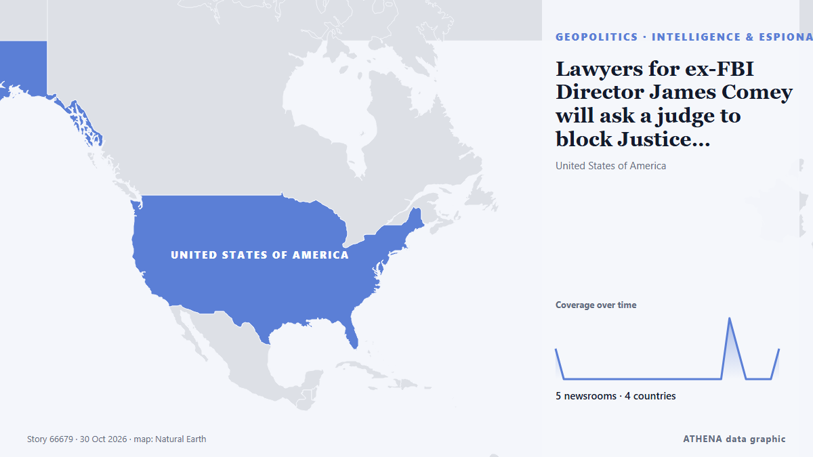

Πληροφορίες & κατασκοπεία
| 18 Οκτ | 0 |
|---|---|
| 19 Οκτ | 0 |
| 20 Οκτ | 0 |
| 21 Οκτ | 0 |
| 22 Οκτ | 0 |
| 23 Οκτ | 0 |
| 24 Οκτ | 0 |
| 25 Οκτ | 0 |
| 26 Οκτ | 0 |
| 27 Οκτ | 0 |
| 28 Οκτ | 1 |
| 29 Οκτ | 3 |
| 30 Οκτ | 0 |
| 31 Οκτ | 0 |
Ουκρανία · Ukraine2Ρωσία · Russia2Ηνωμένες Πολιτείες · United States1Κίνα · China1Ιαπωνία · Japan1Γαλλία · France1
Οι τίτλοι των ειδήσεων παρουσιάζονται στα αγγλικά, όπως δημοσιεύτηκαν.

Lawyers for ex-FBI Director James Comey will ask a judge to block Justice Department prosecution
Lawyers for former FBI Director James Comey will ask a federal judge on Friday to block the Justice Department from pursuing its third criminal case against the outspoken critic of President Donald… από The Canadian Press (via CityNews)
4.5Σημασία
2.2Κίνδυνος · μέτριος
74%Βεβαιότητα
Αλλού στην ενότητα Γεωπολιτική, Πολιτική & Ασφάλεια
Περισσότερα ›Οι υπόλοιπες υποενότητες της ενότητας Γεωπολιτική, Πολιτική & Ασφάλεια αυτή τη στιγμή.